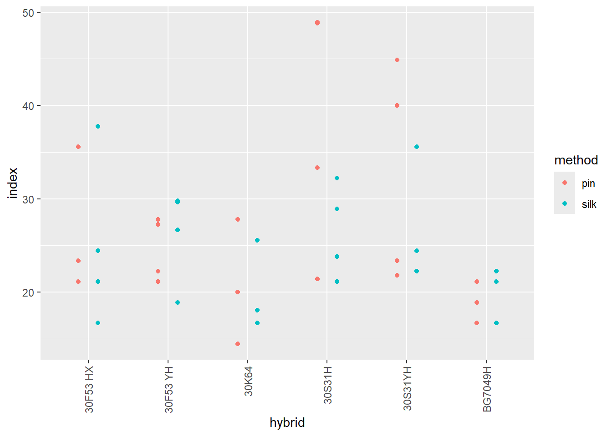

# parcela subdividida: aplica o que tem menos níveis (neste caso, o método de inoculação). Usamos parcela subdividida porque economizamos espaço, o tamanho de área reduz pela metade. Se tem uma interação, preciso explicar como o método está interferindo. No modelo de ANOVA, deve-se levar em conta esse alinhamento hierárquico (bloco, híbrido e método).
## Importando os dados
library(readxl)
library(tidyverse)── Attaching core tidyverse packages ──────────────────────── tidyverse 2.0.0 ──
✔ dplyr 1.2.0 ✔ readr 2.2.0
✔ forcats 1.0.1 ✔ stringr 1.6.0
✔ ggplot2 4.0.2 ✔ tibble 3.3.1
✔ lubridate 1.9.5 ✔ tidyr 1.3.2
✔ purrr 1.2.1
── Conflicts ────────────────────────────────────────── tidyverse_conflicts() ──
✖ dplyr::filter() masks stats::filter()
✖ dplyr::lag() masks stats::lag()
ℹ Use the conflicted package (<http://conflicted.r-lib.org/>) to force all conflicts to become errorsmilho <- read_excel("dados_diversos.xlsx", sheet = "milho")
milho |>
ggplot(aes(x = hybrid, y = index, color = method)) +
geom_point(position = position_dodge(width = 0.5)) +
theme(axis.text.x = element_text(angle = 90, vjust = 0.5, hjust = 1)) 
# O modelo segue a lógica: y ~ Bloco + Parcela + Erro(Bloco:Parcela) + Subparcela + Interação
modelo_split <- aov(index ~ block + hybrid + Error(block:hybrid) + method + hybrid:method, data = milho)
summary(modelo_split)
Error: block:hybrid
Df Sum Sq Mean Sq
block 1 545.4 545.4
hybrid 5 1441.5 288.3
Error: Within
Df Sum Sq Mean Sq F value Pr(>F)
hybrid 5 165.7 33.14 1.534 0.2090
method 1 79.6 79.61 3.686 0.0644 .
hybrid:method 5 265.3 53.06 2.457 0.0558 .
Residuals 30 647.8 21.59
---
Signif. codes: 0 '***' 0.001 '**' 0.01 '*' 0.05 '.' 0.1 ' ' 1residuos <- residuals(modelo_split$Within)
shapiro.test(residuos)
Shapiro-Wilk normality test
data: residuos
W = 0.97663, p-value = 0.5504library(car)Carregando pacotes exigidos: carData
Anexando pacote: 'car'
O seguinte objeto é mascarado por 'package:dplyr':
recode
O seguinte objeto é mascarado por 'package:purrr':
someleveneTest(index ~ hybrid * method, data = milho)Levene's Test for Homogeneity of Variance (center = median)
Df F value Pr(>F)
group 11 2.1493 0.04152 *
36
---
Signif. codes: 0 '***' 0.001 '**' 0.01 '*' 0.05 '.' 0.1 ' ' 1library(lme4)Carregando pacotes exigidos: Matrix
Anexando pacote: 'Matrix'
Os seguintes objetos são mascarados por 'package:tidyr':
expand, pack, unpack
Registered S3 method overwritten by 'lme4':
method from
na.action.merMod car library(lmerTest)Warning: pacote 'lmerTest' foi compilado no R versão 4.5.3
Anexando pacote: 'lmerTest'
O seguinte objeto é mascarado por 'package:lme4':
lmer
O seguinte objeto é mascarado por 'package:stats':
stepmodelo_misto <- lmer(index ~ hybrid * method + (1|block) +
(1|block:hybrid), data = milho)
# ver a ANOVA
anova(modelo_misto)Type III Analysis of Variance Table with Satterthwaite's method
Sum Sq Mean Sq NumDF DenDF F value Pr(>F)
hybrid 264.409 52.882 5 15 3.1397 0.03891 *
method 79.606 79.606 1 18 4.7263 0.04329 *
hybrid:method 265.281 53.056 5 18 3.1500 0.03240 *
---
Signif. codes: 0 '***' 0.001 '**' 0.01 '*' 0.05 '.' 0.1 ' ' 1# ver os coeficientes e detalhes do modelo
summary(modelo_misto)Linear mixed model fit by REML. t-tests use Satterthwaite's method [
lmerModLmerTest]
Formula: index ~ hybrid * method + (1 | block) + (1 | block:hybrid)
Data: milho
REML criterion at convergence: 247.4
Scaled residuals:
Min 1Q Median 3Q Max
-1.93617 -0.35931 -0.02199 0.46970 1.25419
Random effects:
Groups Name Variance Std.Dev.
block:hybrid (Intercept) 22.61 4.755
block (Intercept) 11.28 3.358
Residual 16.84 4.104
Number of obs: 48, groups: block:hybrid, 24; block, 4
Fixed effects:
Estimate Std. Error df t value Pr(>|t|)
(Intercept) 2.528e+01 3.561e+00 1.855e+01 7.099 1.08e-06 ***
hybrid30F53 YH -6.819e-01 4.441e+00 2.285e+01 -0.154 0.87933
hybrid30K64 -4.723e+00 4.441e+00 2.285e+01 -1.063 0.29874
hybrid30S31H 1.284e+01 4.441e+00 2.285e+01 2.891 0.00828 **
hybrid30S31YH 7.223e+00 4.441e+00 2.285e+01 1.626 0.11761
hybridBG7049H -5.834e+00 4.441e+00 2.285e+01 -1.314 0.20204
methodsilk -2.778e-01 2.902e+00 1.800e+01 -0.096 0.92479
hybrid30F53 YH:methodsilk 1.919e+00 4.104e+00 1.800e+01 0.468 0.64573
hybrid30K64:methodsilk 1.181e+00 4.104e+00 1.800e+01 0.288 0.77688
hybrid30S31H:methodsilk -1.133e+01 4.104e+00 1.800e+01 -2.761 0.01287 *
hybrid30S31YH:methodsilk -5.556e+00 4.104e+00 1.800e+01 -1.354 0.19256
hybridBG7049H:methodsilk 4.974e-14 4.104e+00 1.800e+01 0.000 1.00000
---
Signif. codes: 0 '***' 0.001 '**' 0.01 '*' 0.05 '.' 0.1 ' ' 1
Correlation of Fixed Effects:
(Intr) hy30F53YH hy30K64 hy30S31H hy30S31YH hyBG7049H mthdsl
hybr30F53YH -0.624
hybrid30K64 -0.624 0.500
hybrd30S31H -0.624 0.500 0.500
hybr30S31YH -0.624 0.500 0.500 0.500
hybrBG7049H -0.624 0.500 0.500 0.500 0.500
methodsilk -0.407 0.327 0.327 0.327 0.327 0.327
hyb30F53YH: 0.288 -0.462 -0.231 -0.231 -0.231 -0.231 -0.707
hybrd30K64: 0.288 -0.231 -0.462 -0.231 -0.231 -0.231 -0.707
hybr30S31H: 0.288 -0.231 -0.231 -0.462 -0.231 -0.231 -0.707
hyb30S31YH: 0.288 -0.231 -0.231 -0.231 -0.462 -0.231 -0.707
hybBG7049H: 0.288 -0.231 -0.231 -0.231 -0.231 -0.462 -0.707
h30F53YH: h30K64: h30S31H: h30S31YH:
hybr30F53YH
hybrid30K64
hybrd30S31H
hybr30S31YH
hybrBG7049H
methodsilk
hyb30F53YH:
hybrd30K64: 0.500
hybr30S31H: 0.500 0.500
hyb30S31YH: 0.500 0.500 0.500
hybBG7049H: 0.500 0.500 0.500 0.500 library(DHARMa)Warning: pacote 'DHARMa' foi compilado no R versão 4.5.3This is DHARMa 0.4.7. For overview type '?DHARMa'. For recent changes, type news(package = 'DHARMa')library(emmeans)Warning: pacote 'emmeans' foi compilado no R versão 4.5.3Welcome to emmeans.
Caution: You lose important information if you filter this package's results.
See '? untidy'medias_misto <- emmeans(modelo_misto, ~ method | hybrid)
medias_misto <- emmeans(modelo_misto, ~ hybrid | method)
medias_mistomethod = pin:
hybrid emmean SE df lower.CL upper.CL
30F53 HX 25.3 3.56 18.6 17.8 32.7
30F53 YH 24.6 3.56 18.6 17.1 32.1
30K64 20.6 3.56 18.6 13.1 28.0
30S31H 38.1 3.56 18.6 30.7 45.6
30S31YH 32.5 3.56 18.6 25.0 40.0
BG7049H 19.4 3.56 18.6 12.0 26.9
method = silk:
hybrid emmean SE df lower.CL upper.CL
30F53 HX 25.0 3.56 18.6 17.5 32.5
30F53 YH 26.2 3.56 18.6 18.8 33.7
30K64 21.5 3.56 18.6 14.0 28.9
30S31H 26.5 3.56 18.6 19.0 34.0
30S31YH 26.7 3.56 18.6 19.2 34.1
BG7049H 19.2 3.56 18.6 11.7 26.6
Degrees-of-freedom method: kenward-roger
Confidence level used: 0.95 library(multcomp)Warning: pacote 'multcomp' foi compilado no R versão 4.5.3Carregando pacotes exigidos: mvtnormWarning: pacote 'mvtnorm' foi compilado no R versão 4.5.3Carregando pacotes exigidos: survival
Carregando pacotes exigidos: TH.dataWarning: pacote 'TH.data' foi compilado no R versão 4.5.3Carregando pacotes exigidos: MASS
Anexando pacote: 'MASS'
O seguinte objeto é mascarado por 'package:dplyr':
select
Anexando pacote: 'TH.data'
O seguinte objeto é mascarado por 'package:MASS':
geysercld(medias_misto, Letters = LETTERS)method = pin:
hybrid emmean SE df lower.CL upper.CL .group
BG7049H 19.4 3.56 18.6 12.0 26.9 A
30K64 20.6 3.56 18.6 13.1 28.0 A
30F53 YH 24.6 3.56 18.6 17.1 32.1 AB
30F53 HX 25.3 3.56 18.6 17.8 32.7 AB
30S31YH 32.5 3.56 18.6 25.0 40.0 AB
30S31H 38.1 3.56 18.6 30.7 45.6 B
method = silk:
hybrid emmean SE df lower.CL upper.CL .group
BG7049H 19.2 3.56 18.6 11.7 26.6 A
30K64 21.5 3.56 18.6 14.0 28.9 A
30F53 HX 25.0 3.56 18.6 17.5 32.5 A
30F53 YH 26.2 3.56 18.6 18.8 33.7 A
30S31H 26.5 3.56 18.6 19.0 34.0 A
30S31YH 26.7 3.56 18.6 19.2 34.1 A
Degrees-of-freedom method: kenward-roger
Confidence level used: 0.95
P value adjustment: tukey method for comparing a family of 6 estimates
significance level used: alpha = 0.05
NOTE: If two or more means share the same grouping symbol,
then we cannot show them to be different.
But we also did not show them to be the same.